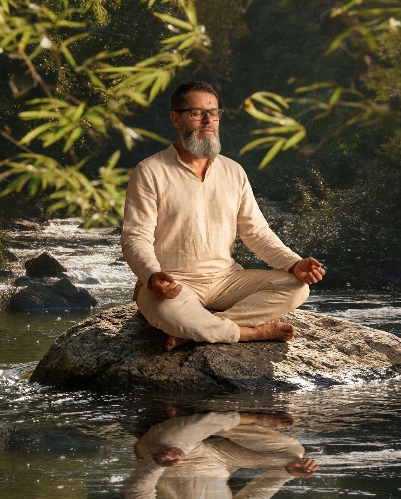
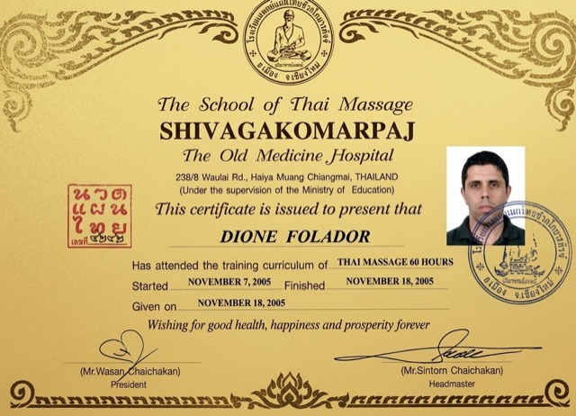
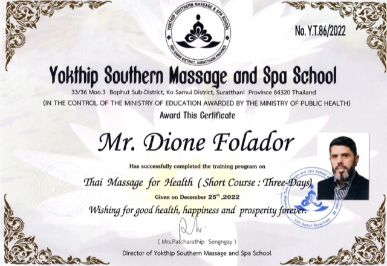
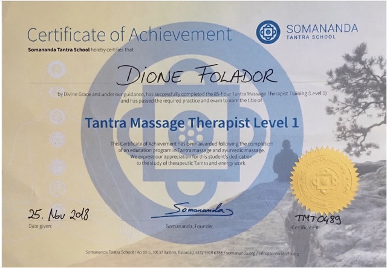
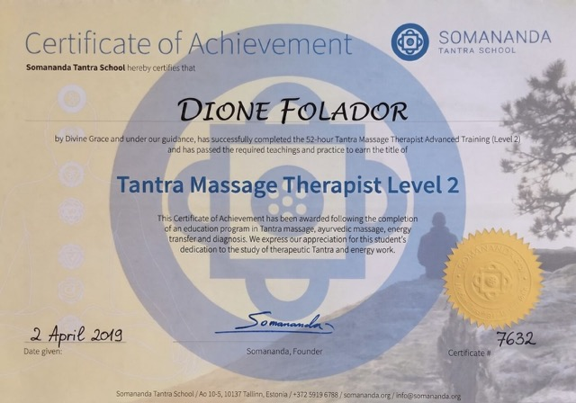
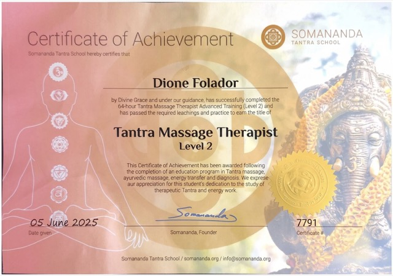
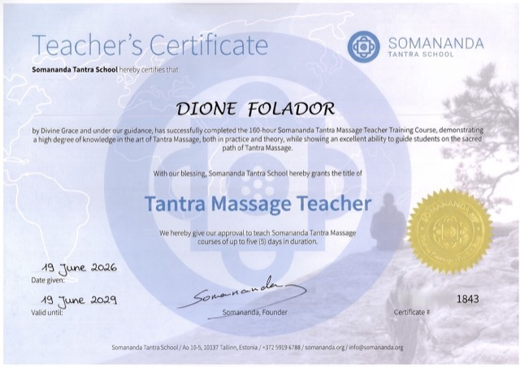

Meu nome é Dione Folador. Trabalho com assessoria e mentoria em cripto e investimentos. Nas minhas horas vagas, gosto de aprender técnicas de desenvolvimento humano e do corpo, e isso virou quase um hobby, que cultivo desde 2005. É um lado meu que quase nunca mostrei.
Em algum momento entendi que o corpo era a porta que faltava. Vi na prática, primeiro em mim, que tensão acumulada e respiração curta quase nunca são só físicas, e que o toque bem treinado é um caminho que a conversa sozinha às vezes não alcança.
Decidi então aprender na fonte. A massagem tailandesa veio primeiro: em 2005 fiz minha primeira formação em Chiang Mai, no norte da Tailândia, na The Old Medicine Hospital. Em 2022 voltei e fiz um curso no sul do país, em Ko Samui. A massagem tântrica eu estudei na Estônia, na Somananda Tantra School, em Tallinn, uma das escolas de referência mundial em tantra e trabalho energético, onde cheguei a professor.
Hoje compartilho o que aprendi, sem deixar de ser aluno. Não vivo disso, é um hobby sério, e por isso não vendo promessa: ensino o que sei, do jeito que pratico.

Chiang Mai, 2005The Old Medicine Hospital, 60 h
Ko Samui, 2022Yokthip Southern Massage and Spa School, 3 dias
Terapeuta nível 1, 201885 h
Terapeuta nível 2, 201952 h
Nível 2 avançado, 202564 h
Professor, 2026160 hO que eu ensino não é teoria coletada na internet. É o que minhas mãos aprenderam nesses lugares, organizado em método: com ordem, critério de segurança e honestidade sobre o que cada técnica pode e não pode fazer.
Não prometo transformação mágica. Prometo o que posso cumprir: conteúdo sólido, técnica verificável e o compromisso de ensinar como fui ensinado, com seriedade e respeito por quem está na maca.